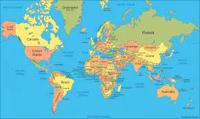

article talk
Various lists of the Wonders of the World have been compiled from antiquity to the present day,
in order to catalogue the world's most spectacular natural features and human-built structures.
The Seven Wonders of the Ancient World is the oldest known list of this type,
documenting the most remarkable man-made creations of classical antiquity;
it was based on guidebooks popular among Hellenic sightseers and as such only includes works located around the Mediterranean rim and in the ancient Near East. The number seven was chosen because the Greeks believed it represented perfection and plenty,
and because it reflected the number of planets known in ancient times (five) plus the Sun and Moon
Main article: Seven Wonders of the Ancient World
The Greek historian Herodotus (484 – c. 425 BC) and the scholar Callimachus of Cyrene (c. 305–240 BC), at the Museum of Alexandria, made early lists of seven wonders.
These lists have not survived, however, except as references in other writings
The classic Seven Wonders were:
Great Pyramid of Giza, in El Giza, Egypt, the earliest of the wonders to be completed, as well as the only one that still exists in the present day.
Colossus of Rhodes, in the harbor of the city of Rhodes, on the Greek island of the same name.
Hanging Gardens of Babylon, in Babylon, near present-day Hillah, Babil province, Iraq; or Nineveh, Mosul, Nineveh Governorate, Iraq.
Lighthouse of Alexandria, in Alexandria, Egypt.
Mausoleum at Halicarnassus, in Halicarnassus, a city of the Achaemenid Empire in present-day Turkey.
Statue of Zeus at Olympia, in Olympia, Greece.
Temple of Artemis at Ephesus, in the city of Ephesus, near present-day Selçuk, Turkey.
Visit W3Schools
 In the 19th and early 20th centuries, some writers emulated the classical list by creating their own lists with names such as "Wonders of the Middle Ages", "Seven Wonders of the Middle Ages", "Seven Wonders of the Medieval Mind", and "Architectural Wonders of the Middle Ages".[2] It is unlikely that any of these lists actually originated in the Middle Ages since the concept of a "Middle Age" did not become popular until at least the 16th century and the word "medieval" was not invented until the Enlightenment era. Brewer's Dictionary of Phrase and Fable refers to them as "later list[s]",[3] suggesting the lists were created after the Middle Ages.
< -> Catacombs of Kom el Shoqafa, a 2nd-century funerary complex in Alexandria, Egypt.
-> Colosseum, a 1st-century amphitheatre in the centre of the city of Rome, Italy.1
->Great Wall of China, a series of defensive fortifications built across the historical northern borders of China, with some segments dating to as early as the 7th century BC.
->Hagia Sophia, a 6th-century cathedral and mosque in Istanbul, Turkey.
->Leaning Tower of Pisa, a 12th-century bell tower in Pisa, Italy.
-> Porcelain Tower of Nanjing, a 15th-century pagoda on the south bank of the external Qinhuai River in Nanjing, People's Republic of China.
->Stonehenge, a Neolithic henge monument in Wiltshire, England dated to the 3rd millennium BC.
Other structures sometimes included on such lists include:
=>Cairo Citadel, a 13th-century Islamic fortification in Cairo, Egypt.
=>Cluny Abbey, a 10th-century Benedictine monastery in Cluny, Saône-et-Loire, France.
=>Ely Cathedral, a (currently Anglican) cathedral originally built in the 11th century in Ely, Cambridgeshire, England.
several natural wonders:
Seven Wonders of the Industrial World
.jpg) British author Deborah Cadbury wrote Seven Wonders of the Industrial World, a book telling the stories of seven great feats of engineering of the 19th and early 20th centuries.[22] In 2003, the BBC aired a seven-part docudrama exploring the same feats, with Cadbury as a producer. [23]
SS Great Eastern, British oceangoing passenger steamship, launched in 1858
Bell Rock Lighthouse, in the North Sea off the coast of Angus, Scotland, completed in 1810
Brooklyn Bridge, in New York City, New York, United States, opened to traffic in 1883
London sewerage system, serving London, England since the late 19th century
First transcontinental railroad, 1,912-mile (3,077 km) continuous railroad line connecting existing rail networks in Iowa, Nebraska, Wyoming, Utah, Nevada, and California in the United States, completed in 1869
Panama Canal, 51-mile (82 km) artificial waterway crossing the Isthmus of Panama and connecting the Atlantic and Pacific oceans, completed in 1914
Hoover Dam, on the Colorado River, spanning the border between Nevada and Arizona in the United States, completed in 1936
British author Deborah Cadbury wrote Seven Wonders of the Industrial World, a book telling the stories of seven great feats of engineering of the 19th and early 20th centuries.[22] In 2003, the BBC aired a seven-part docudrama exploring the same feats, with Cadbury as a producer. [23]
SS Great Eastern, British oceangoing passenger steamship, launched in 1858
Bell Rock Lighthouse, in the North Sea off the coast of Angus, Scotland, completed in 1810
Brooklyn Bridge, in New York City, New York, United States, opened to traffic in 1883
London sewerage system, serving London, England since the late 19th century
First transcontinental railroad, 1,912-mile (3,077 km) continuous railroad line connecting existing rail networks in Iowa, Nebraska, Wyoming, Utah, Nevada, and California in the United States, completed in 1869
Panama Canal, 51-mile (82 km) artificial waterway crossing the Isthmus of Panama and connecting the Atlantic and Pacific oceans, completed in 1914
Hoover Dam, on the Colorado River, spanning the border between Nevada and Arizona in the United States, completed in 1936
(1) Great Wall of China. Great Wall of China © Digital Vision/Getty Images....
(2) Chichén Itzá El Castillo, a Toltec-style pyramid, Chichén Itzá, Yucatán state, Mexico © diegograndi/iStock.com. ...
(3) Petra. the Khaznah @ Lovrencg/Fotolia. ...
(4) Machu Picchu. ...
(5) Christ the Redeemer. ...
(6) Colosseum. ...
(7) Taj Mahal.